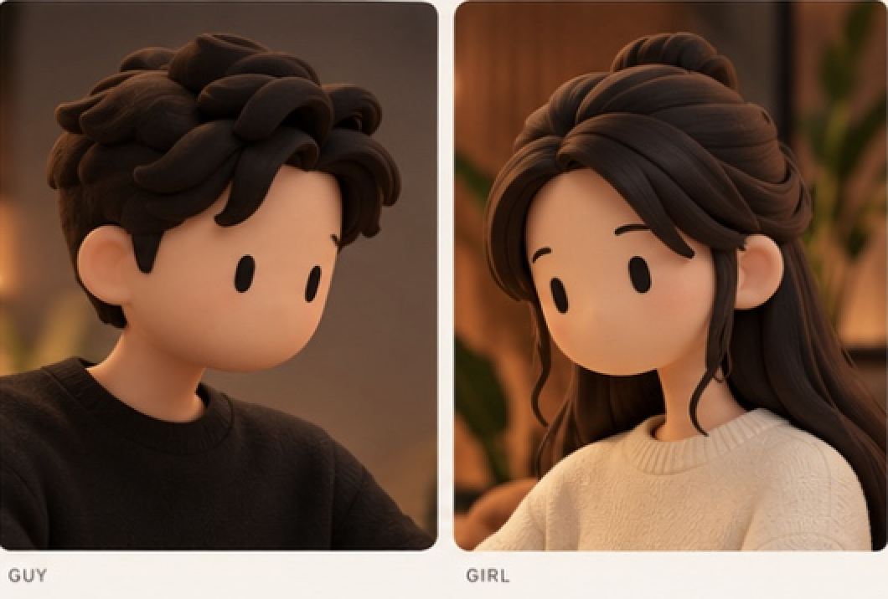

The restored original faces are preserved. Compare the seated poses, typing frames and repaired hair with your supplied reference, or return to the original close-ups. Open the studio.
Female hand correction: top view · keyboard view. Earlier body renders below predate that hand correction and the padded texture repair. The live studio uses the current exports.
Approved reference · face, hair and fabric

Reference lighting is amber and directional; neutral rendering helps expose material problems.Man · restored source and skeletal poseOriginal face and PBR textures, preserved through the skeletal animation.Woman · restored source and skeletal poseOriginal face and PBR textures, preserved through the skeletal animation.
Preserved
Original Meshy face, eyes, ears, skin and hair shapes.
Adult body proportions and source clothing textures.
Original face-to-face room layout and navigation.
Verified in this pass
Seated wrists reach the keyboard and feet remain planted.
Eight-second typing, breathing and head-motion loop.
Side and rear hair remain intact through the animation.


 Original face and PBR textures, preserved through the skeletal animation.
Original face and PBR textures, preserved through the skeletal animation. Original face and PBR textures, preserved through the skeletal animation.
Original face and PBR textures, preserved through the skeletal animation.